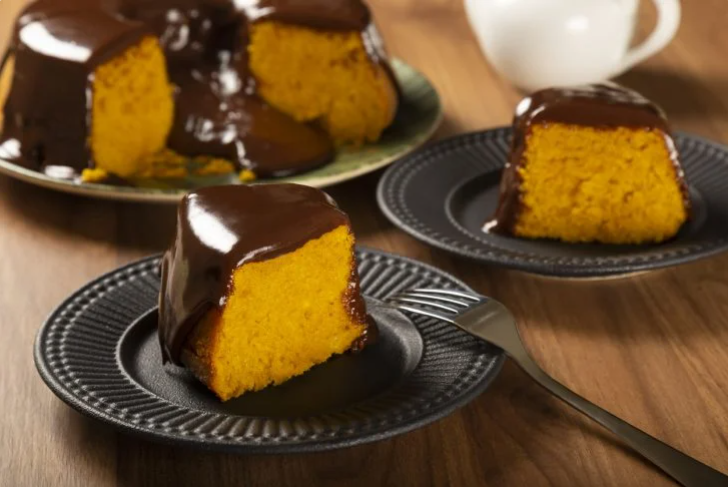

<
Bolo de cenoura
Bolo de Cenoura Recipe

Hot from the oven!
This easy carrot cake recipe is perfect for those who need a quick recipe, but if you have more time what do you have to make a stuffed carrot cake or volcano carrot cake ? Nobody will resist!
Ingredients:
Cake:
- 1/2 cup (tea) of oil
- 3 medium carrots grated
- 4 eggs
- 2 cups (tea) of sugar
- 2 and 1/2 cups (tea) of wheat flour
- 1 tablespoon of baking powder
Cover:
- 1 tablespoon of butter
- 3 tablespoons of powdered chocolate
- 1 cup (tea) of sugar
- 1 cup (tea) milk
Preparation:
Cake:
- In a blender, add the carrots, eggs and oil, then blend.
- Add the sugar and beat again for 5 minutes.
- In a bowl or mixer, add the flour and then mix again .
- Add the yeast and mix slowly with a spoon.
- Bake in an oven preheated to 180°C for approximately 40 minutes.
Cover:
- Pour the butter, cocoa powder, sugar and milk into a bowl, then mix.
- Bring the mixture to a boil and continue mixing until you get a creamy consistency, then pour the syrup over the cake .
There you have it! Enjoy your delicious meal!
Why not cook the other recipes we have?
Go back